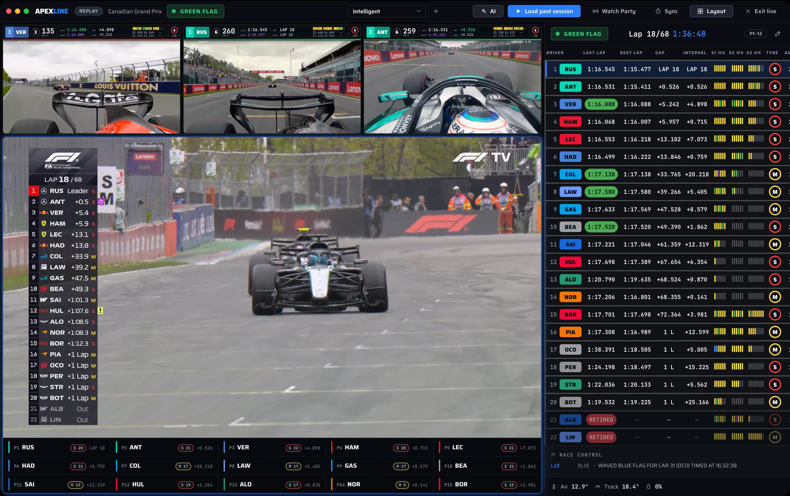
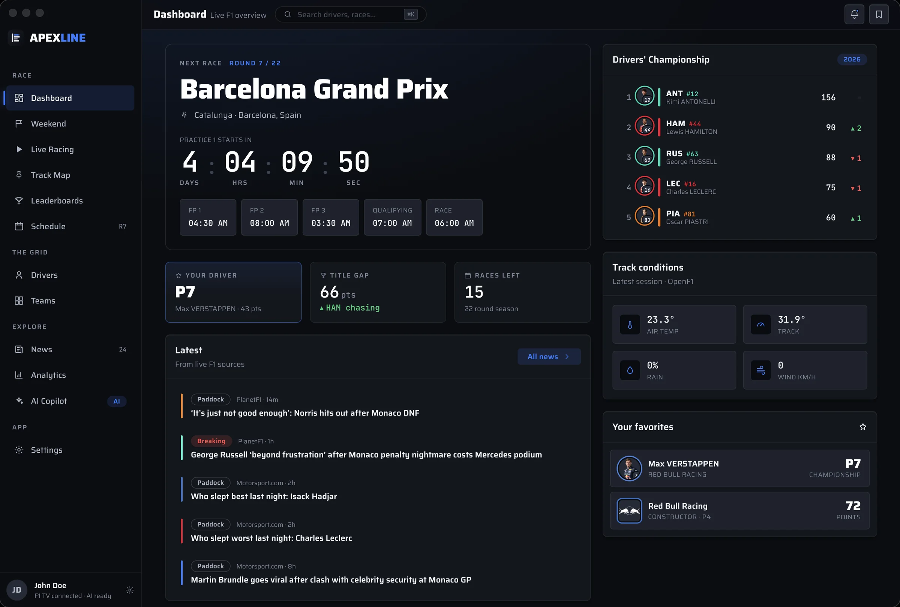
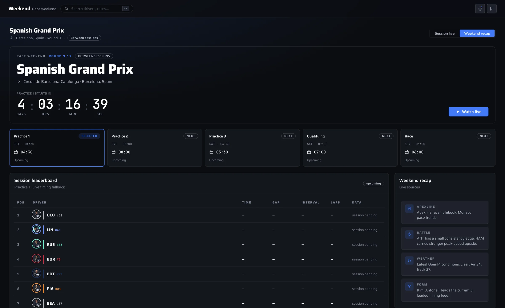
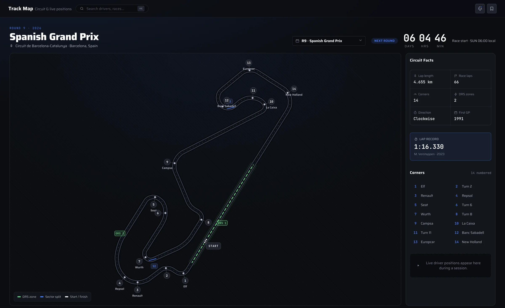
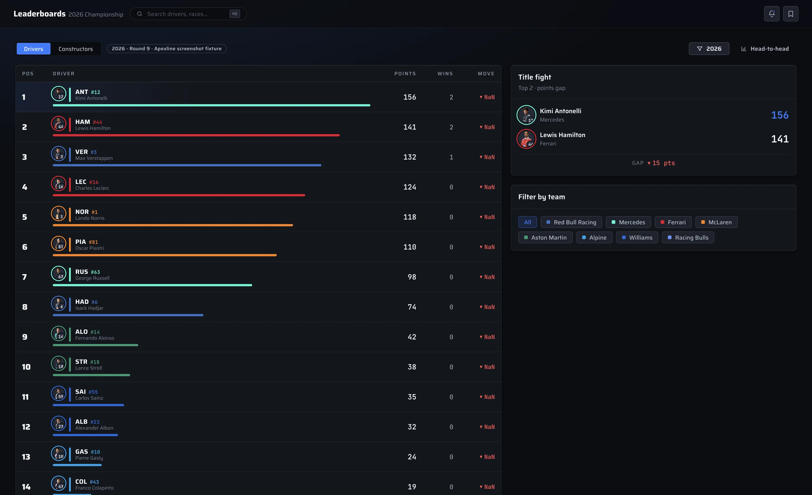
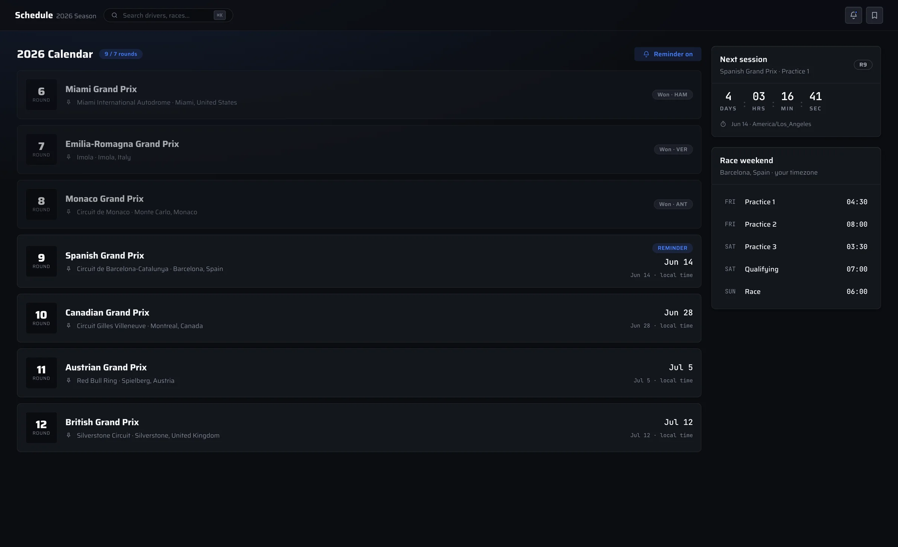
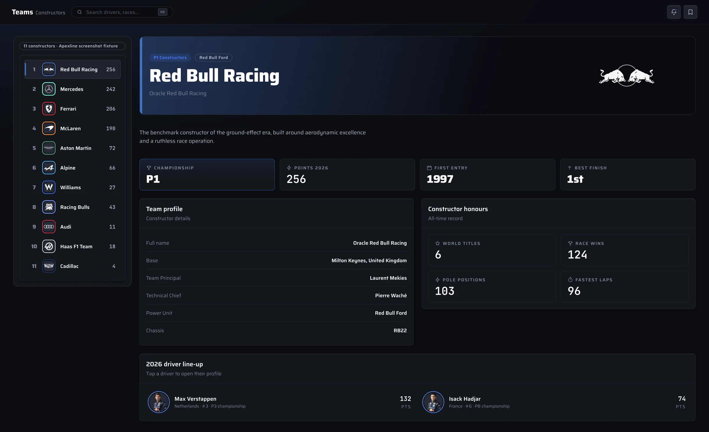
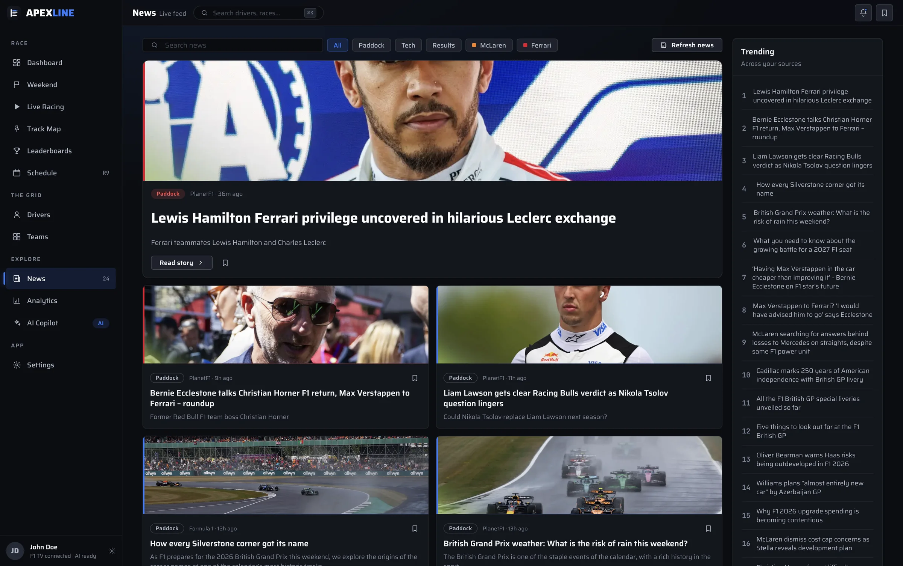
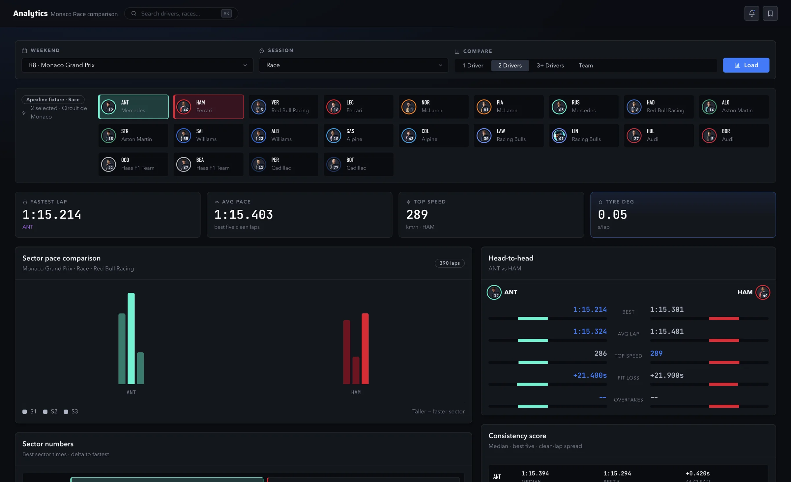
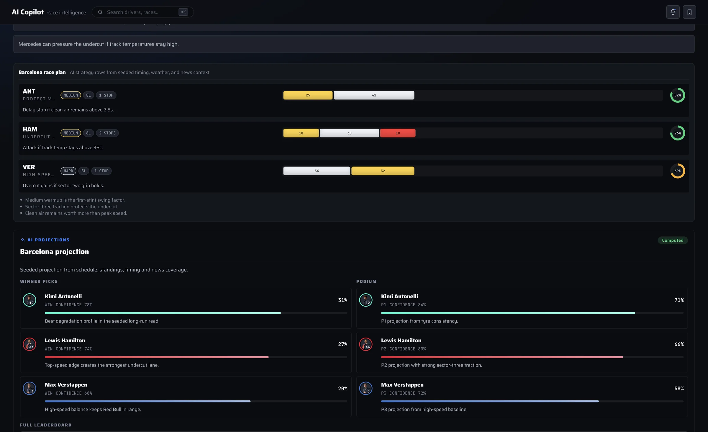

The whole race weekend in one window.
Apexline is a Mac app for Formula 1 fans. Watch F1 TV with live timing, onboards and the track map beside it, then dig into standings and race data between sessions.
Free and open source. Version 1.1.14 for Apple silicon.

-
Video and timing together
The F1 TV world feed and your pick of onboards sit next to a 22-car timing tower with gaps, mini-sectors, tyres and race control.
-
No spoilers from the timing
Timing is held back to match your stream, so the tower changes when the broadcast does, not seconds before.
-
Arrange it your way
Start from a preset layout, resize any panel, or build and save your own for races, qualifying and replays.
Everything between the lights.
The rest of Apexline covers the weekend around the race. These are captures of the app itself.

Dashboard
Where the season stands at a glance: the next or current session, the championship, track weather, headlines and your favourite driver and team.

Weekend
Everything about the selected Grand Prix: each session, the countdown, weather, race control and timing, then a recap once the flag falls.

Track Map
Every circuit on the calendar with corners, sectors, DRS zones and the lap record. During a session, cars move around the map in real time.

Leaderboards
Driver and constructor standings with wins, points gaps and how each position has moved since the last race.

Schedule
The full calendar in your time zone, with session times, countdowns and a reminder before any session you don't want to miss.
Drivers
A profile for every driver on the grid: this season's points, recent form, career numbers and background.

Teams
Constructor standings plus each team's line-up, base, leadership, power unit and history.

News
F1 headlines from the main paddock sources, with filters for your teams, saved stories and a reader that opens inside the app.

Analytics
Pick any session and compare drivers or teams on lap pace, sectors, tyre wear, top speed and pit stops.

AI Copilot
Race projections, strategy reads and answers to your questions, based on the timing and standings Apexline has loaded. Sign in with your own ChatGPT or Grok account to use it.
Open source, start to finish.
All of Apexline's code is on GitHub. Read how it works, report a bug, suggest a feature or build your own copy.
- MIT licensed. Built with Electron and React.
- Live data from Formula 1 live timing and OpenF1.
- Your F1 TV and AI sign-ins stay on your Mac. Anonymous usage stats can be turned off (privacy).
$ git clone https://github.com/neelsatyavolu/apexline.git $ cd apexline $ npm install $ npm start # Runs the app from source on macOS
Get Apexline for macOS.
Apexline is free. Watching race video needs your own active F1 TV subscription. This build is Developer ID signed and Apple notarized.
- Version
- 1.1.14
- Requires
- Apple silicon Mac
- Download
- 106 MB
- Updates
- Manual download